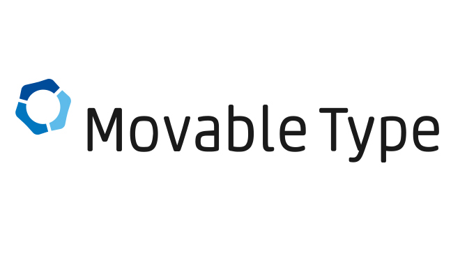
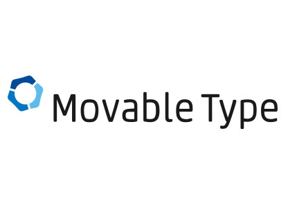
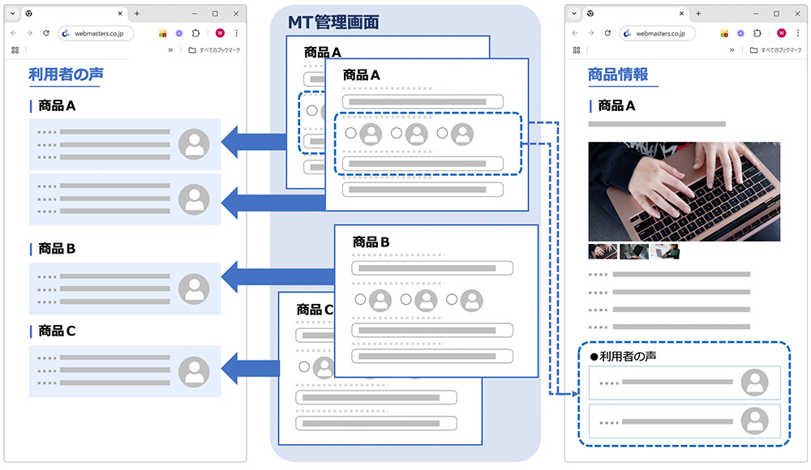
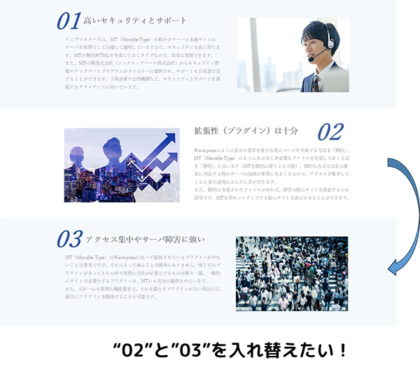
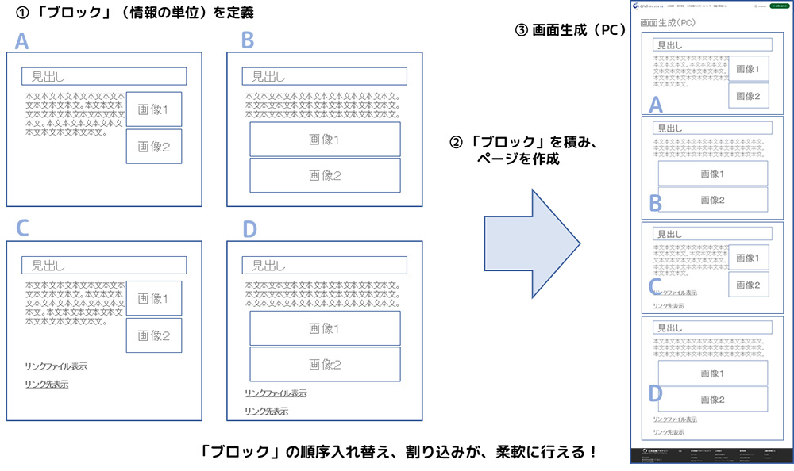

Movable Type開発やりますMovableType
- HOME
- Movable Type開発やります


数あるCMS製品の中で、上場企業や公的機関など信頼性とセキュリティを重視するクライアントから大きな支持を集めているMT(Movable Type）。その安全性や拡張性、サーバ環境の柔軟性などは大きな魅力です。
サイト全体でのシェアは無料で使えるWordPressに大きく水を開けられているため、積極的に開発に取り組んでいる業者は限られるようですが、ウェブマスターズはMTがもつ信頼性等の特長を重視し、それらの大切さ重要さを理解していただけるクライアントのために開発および保守・運用に取り組んでいます。
ご相談、お見積もりのご依頼、ご不明点など
お気軽にお問い合わせください。
MT（Movable Type）の強み
高いセキュリティとサポート
ウェブマスターズは、MT（Movable Type）を動かす「CMSサーバ」とウェブサイトを置く「本番サーバ」を原則として分離して運用していますので、セキュリティを高く保てます。
また、MTの開発元会社（シックス・アパート株式会社）からセキュリティ情報やアップデートプログラムがタイムリーに提供され、サポートも日本語で受けることができます。オープンソースでないことも安全面でプラスです。
上場企業や公的機関など、セキュリティとサポートを重視するクライアントに向いています。
アクセス集中やサーバ障害に強い
Wordpressのように表示の要求を受ける度にページを生成する方式を「動的」、MT（Movable Type）のようにあらかじめ必要なファイルを生成しておく方式を「静的」と言います（MTを動的に使うことも可能）。動的な方式では表示要求に対応する際のサーバの処理が非常に大きくなるので、アクセスが集中してくると表示速度にどんどん差が付きます。
また障害の際に、静的に生成されたファイルがあれば、サイトそのものを復旧させることは容易です。サーバにファイルを置くだけで、MT自体を再セットアップすることなくサイトを表示させることができます。
拡張性（プラグイン）は十分
MT（Movable Type）はWordpressに比べて提供されているプラグインが少ないことは事実ですが、それによって困ることはほとんどありません。何十万のプラグインがあっても、機能が重なる製品が多数存在しますし、実際に必要とするものは極々一部です。サイトで必要となる一般的な機能のプラグインは、MTにも充分に提供されています。
また、万が一にも特殊な機能要求で、それを満たすプラグインがない場合には、独自にプラグインを開発することも可能です。拡張性を心配する必要はないと言えるでしょう。
更新作業を初心者にもやさしくできる
MT（Movable Type）の管理画面は、設計次第で上級用にしたり初心者向けにしたりできます。ウェブマスターズでは、実際の運用を担当する人のリテラシーに合わせた運用と画面の設計を行い構築しています。
具体的な管理画面は、コーディングが分かるなど経験豊富な人が担当なら細かく分割せずコードも使用可能な方が、柔軟性が高く例外にも対応しやすく効率的です。一方、未経験の人であれば、機能を絞り、画面上の場所と管理画面の項目を１対１で対応させる方が使いやすくなります。
難しくて使えないとしたら、それは設計した業者の力量不足です。
自由にデザインできる
MT（Movable Type）では、限られたデザインテンプレートから選ぶしかできない、という誤解もあるようですが、そんなことはありません。自由に作ったデザインを、逆にテンプレートにして使うことはよくある手法です。
また、レスポンシブなサイト（PC向けサイトとスマホ向けサイトを同じHTMLソースコードで表示させる）を作ることが難しいという話を聞くこともありますが、それも誤解です。
HTMLとして実現できるものはMTでも管理できます。 MTに精通した業者であれば問題ありません。
デメリットもある
MT（Movable Type）にはデメリットもありますが、ほとんどのケースでは設計や運用の仕方で解決可能です。
「再構築」というコンテンツファイルを生成する処理が一時的にサーバの負荷を上げてしまい、その間だけ画面表示が遅くなることがあります。廉価なレンタルサーバでは、許容値を超えて打ち切られるようなこともあります。ウェブマスターズでは、原則としてMTサーバと本番サーバを分けますので、再構築の負荷が本番サイトの表示速度に影響することはありません。また、そうでない場合でも、再構築の単位を小さく分ける、再構築処理を深夜などアクセスの少ない時間帯に実施する、といった対応で解決可能です。
また、最新情報の反映タイミングが課題になることもあります。MTは動的なページ生成でないので、設計によっては最新の情報がすぐに反映されません。再構築でファイルが生成されて、初めて閲覧者が見られる状態になるからです。これも、再構築の単位を小さくして更新作業の直後に実行することなど、設計と運用で解決できます。
最後に有償であることですが、それを上回るメリットが見込める場合に、MTのご利用をご提案しています。
ご相談、お見積もりのご依頼、ご不明点など
お気軽にお問い合わせください。
MT（Movable Type）の事例
ウェブマスターズでは、標準CMSをMT（Movable Type）としており、多くの導入実績があります。
同じ情報を複数のページで表示

ご要望や問題点
同じ情報を複数のページで表示させることがあります。たとえば上の図のような、多くの商品を紹介するサイトで、個別の商品紹介ページ（右側）のそれぞれに「利用者の声」を載せ、それとは別に「利用者の声」だけを集めたページ（左側）も作るようなケース。
クライアントは一般に、同じ情報をそれぞれのページに入力すればいい（するしかない？）と考えてしまうようです。これでは二重管理になってしまい、管理の負担が増すだけでなく、更新漏れなどの事故も起きがちになります。
ウェブマスターズの対応
MT（Movable Type）は、同じ情報を複数のページに書き出すことができます。ですので、「利用者の声」がどこかに保存されていれば、それを別のページで流用することは簡単です。ウェブマスターズからクライアントに一元管理でやりましょう、というご提案を行い、採用されました。
ちなみに、この「利用者の声」のケースですが、利用者の声のデータを各製品の情報に付随させて持たせるか、利用者の声だけを集めた保存場所を用意するか、という設計の力量が問われます。
ブロック式で順序を柔軟に
ご要望や問題点

出来上がったページの途中に後から情報を追加したり、順序の入れ替えが必要になったり、そういった柔軟性が求められることがあります。文字レベルであれば、ソースコードで扱うことも難しくはないのですが、見出しと本文と写真をひとかたまりにして順序を変更したり割り込ませるとなると、複雑でミスが起きやすくなります。
また、右図のような背景を交互に入れ替えるデザインや、連番がふられている場合も厄介です。
ウェブマスターズの対応
MT（Movable Type）には、ブロックエディターという機能があります。「ブロック」は情報の単位。見出しと本文と写真の組み合わせのように揃っていて意味が成り立つ（バラバラにすると意味を失ってしまう）まとまりです。
ブロックを適切に定義しMT上で扱うことで、ブロック同士の順序の変更や、ブロックとブロックの間への新しいブロックの追加が容易にできるようになり、サイトを運用するうえで柔軟性が高まるのです。

写真投稿システム
ご要望や問題点
投稿者情報の管理や、投稿された写真やサイズの自動調整と掲載に、MT（Movable Type）を使用しました。また、5人の審査員が投稿規定や公序良俗への適合性などの審査を効率的に行って掲載をスピードアップするために、専用のプラグインを開発しました。掲載までの時間が格段に速くなり、審査が楽になったとご満足いただいています。
電子透かしの自動挿入やダウンロードの抑止など、著作権に対しての配慮策も導入済みです。
ウェブマスターズの対応
投稿者情報の管理や、投稿された写真やサイズの自動調整と掲載に、MT（Movable Type）を使用しました。また、5人の審査員が投稿規定や公序良俗への適合性などの審査を効率的に行って掲載をスピードアップするために、専用のプラグインを開発しました。掲載までの時間が格段に速くなり、審査が楽になったとご満足いただいています。
電子透かしの自動挿入やダウンロードの抑止など、著作権に対しての配慮策も導入済みです。
新着情報などタイムリーな情報掲載
ご要望や問題点
多くのサイトのトップページにある新着情報。このコーナーはスピードや掲載タイミングも求められますし、更新頻度が多いのでコストへの配慮も大事。そこで、MT（Movable Type）などのCMSに期待がかかります。
ウェブマスターズの対応
ウェブマスターズが制作しているサイトでは、多くの新着情報をクライアントのご担当者が自分で更新する仕組みをMTで作っています。スピードやタイミングコントロールがしやすく、コスト削減にもつながるからです。新着情報は、あまり凝ったページを作る必要がなく定型化しやすいことも、クライアント自身による更新に向いている要因のひとつです。
全体共通の一括更新
ご要望や問題点
サイト全体で共通のヘッダーやフッター。特定のカテゴリ内で共通のサブメニュー。こういった共通パーツは、最初の段階でじょうずに設計しておくことで、新規コンテンツの追加や名称変更などの際に、ツールを使って容易に更新できます。
ウェブマスターズの対応
ウェブマスターズがMT（Movable Type）をベースに制作するサイトの多くでは、共通部分の管理をMTのテンプレートに任せています。その他、サイトの特性や使用するサーバの制約などに応じてJavaScriptなどの技術を使って共通化・効率化を実現することもあります。
ご相談、お見積もりのご依頼、ご不明点など
お気軽にお問い合わせください。
CMSの活かし方
CMSでサイトを構築する価値
CMSを使用する価値は、以下のようなポイントにあります。ウェブマスターズでは、どんなサイトを構築する場合でも何らかのCMSを導入しています。
- 大量のファイル管理（同一フォーマットページの大量一斉更新等）
- 情報の整合性（同じ情報や関連情報を複数個所に反映）
- デザインやフォーマットの統一・維持（デザイン変更権限を限定）
- 複数作業者による同時並行作業が可能
- 専門知識が不要（HTMLやFTP）／使用者のリテラシーに対応
- デザイン変更やリニューアルが容易になる
クライアントが直接CMSを使う価値
クライアントが直接CMSを使うと、スピードとコストで価値が生まれます。
- スピード（原稿の用意から、実際のサイト反映までの時間が短い）
- コスト（高頻度で使用すると、業者に依頼するより低コスト）
スピードは、クライアントが直接CMSを使うと数分で反映できることが、私たちのような業者に事前に調整なく依頼すると、半日はかかるでしょう。
コストは、CMS導入のコストと、都度依頼する場合の総コストの比較です。
ウェブマスターズではCMSに関して、導入するかどうか、どこに適用するか、だけでなく、誰が使うかによって、作り方を変えています。
CMSの保守の重要性
ウェブマスターズでは、下に掲げる保守方針で対応しております。これらの煩雑で専門性を求められる保守・運用作業を、まとめて承ります。
CMSについて、たびたびご相談を受けるのが、「担当者が辞め、仕様がわからず更新が止まっている」、「重大なセキュリティーホールに技術対応できず、不正アタックでページを改ざんされた」、「搭載CMSバージョンやプラグインのサポートが終了し、困っている」といった保守に関する問題です。
MT（Movable Type）やWordPressのようなCMSは便利なツールですが、安全に使い続けるためには、保守に不安を残さないことが必須です。
- 【ウェブマスターズでCMSの保守方針】
- CMSへのアクセス権を最低限／アクセス元制限必須
- CMSサーバと本番サーバの分離
- 不要な機能の停止
- CMSの最新情報を入手しバージョンアップに即応
- アクセス増によるサーバ負荷や不正アタックを監視
- 適切なバックアップの確保
- 各種ログの取得
ご相談、お見積もりのご依頼、ご不明点など
お気軽にお問い合わせください。
システム開発事例
ウェブマスターズでは、MT（Movable Type）をベースにしたCMS開発以外にも、いろいろなシステム開発を行ってきました。
ニュース掲載メディア連携
内容
大手新聞社などのニュースメディアが配信するRSSを情報源にして、クライアントのサイト内にニュースを掲載する機能です。そのサイトが主な関心事としている事項に関連するニュースをキーワード等の条件で自動選別し掲載します。
メール配信と既読確認
内容
業務上で必要とされる情報をメールで配信した後に、相手に内容が確認されたことを管理するシステムです。管理者が大勢の相手に個別に確認せずに済み、受け取り手に取ってもボタンを押すだけの負担の小さい仕組みです。メールやSNSのシステム的な既読だけでは、本人が認識しないまま既読になったケースもあるので、ボタンを押す仕組みを導入しました。
その他
内容
割とよくある以下のようなシステムも手掛けています
- ①会員管理／会員サイト
- ②業務支援（ワークフロー／進捗／共有）
- ③決済システム連携
ご相談、お見積もりのご依頼、ご不明点など
お気軽にお問い合わせください。